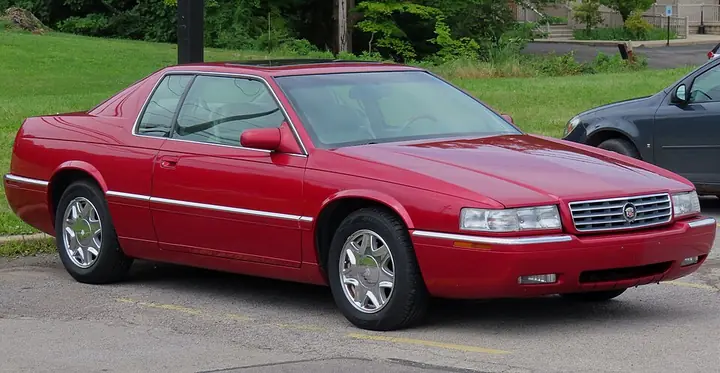
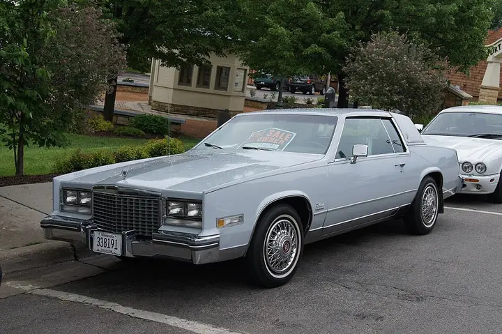
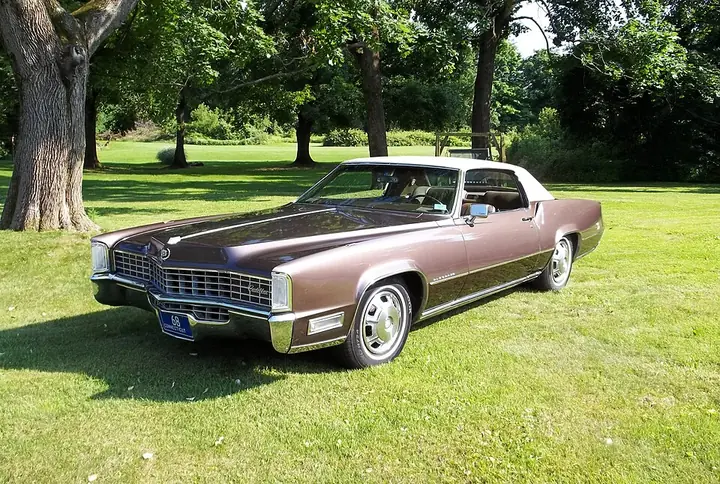
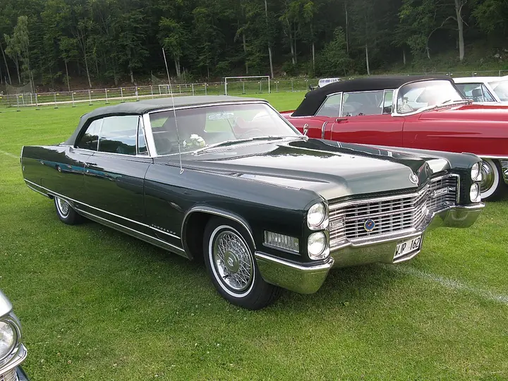
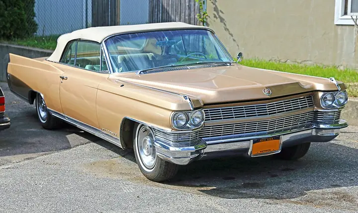
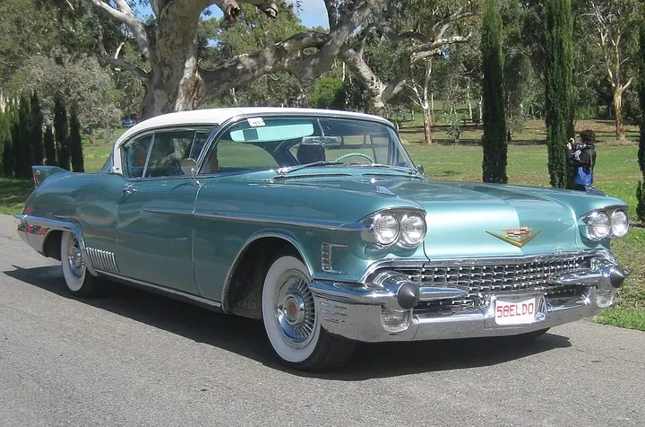
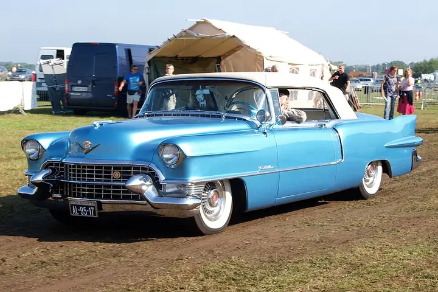

Cadillac Eldorado
Twelfth generation (1992–2002) · 1992–2002
Abstract
This generation of the Cadillac Eldorado was built 1992–2002 in Detroit/Hamtramck Assembly, Hamtramck, Michigan, U.S. (1992–2000), Lansing Craft Center, Lansing, Michigan, U.S. (2000–2002). Body styles: 2-door coupé. Layout: Transverse front-engine, front-wheel drive. Designed by Dick Ruzzin (1990).


1Specifications
| Model years | 1992–2002 |
|---|---|
| Assembly | Detroit/Hamtramck Assembly, Hamtramck, Michigan, U.S. (1992–2000)Lansing Craft Center, Lansing, Michigan, U.S. (2000–2002) |
| Designer | Dick Ruzzin (1990) |
| Body style | 2-door coupé |
| Layout | Transverse front-engine, front-wheel drive |
| Platform | E-body |
| Engine | 4.9 L L26 V8 (1992–1993)4.6 L L37 V8 (1993–2002, ETC)4.6 L LD8 V8 (1994–2002, ESC) |
| Transmission | 4-speed 4T60-E automatic4-speed 4T80-E automatic |
| Wheelbase | 108.0 in |
| Length | 202.2 in (1992–94)200.6 in (1995–2002) |
| Width | 75.5 in |
| Height | 54.0 in |
| Related | Buick RivieraOldsmobile Toronado |
| Successor | Cadillac CTS coupe |
2Previous generations



.jpg){kind=link}





.jpg){kind=link}



.jpg){kind=link}

.jpg){kind=link}



,_photo-02.jpg){kind=link}

.jpg){kind=link}
3Generation by generation
Length −8% from the first to the last
1953 19535,608 mm
1954–1956 19545,674 mm
1957–1958 19575,641 mm
1959–1960 19595,715 mm
1961–1962 19615,639 mm
1963–1964 19635,664 mm
1965–1966 19655,690 mm
1967–1970 19675,613 mm
1971–1978 19715,690 mm
1979–1985 19795,194 mm
1986–1991 19864,862 mm
1992–2002 19925,136 mm
Weight −3% from the first to the last
1953 19532,268 kg
1954–1956 19542,223 kg
1957–1958 19572,268 kg
1959–1960 19592,313 kg
1961–1962 19612,177 kg
1963–1964 19632,177 kg
1965–1966 19652,132 kg
1967–1970 19672,130 kg
1971–1978 19712,190 kg